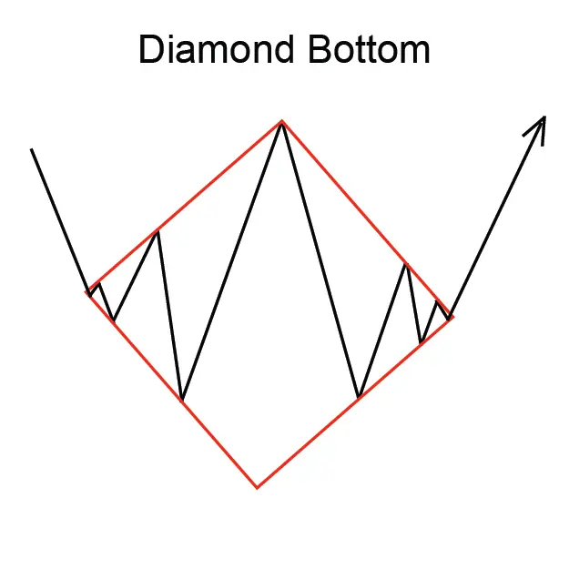
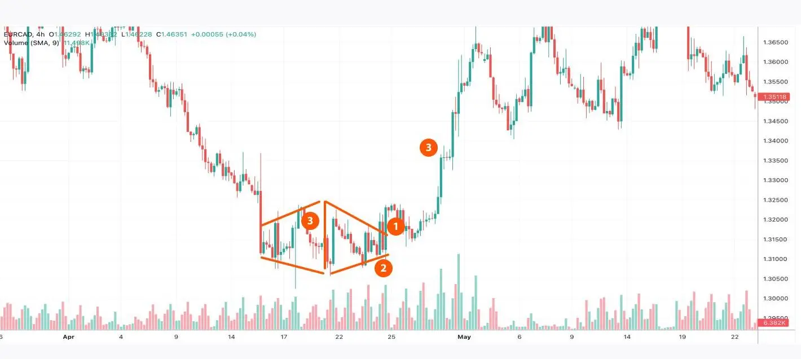

डायमंड बॉटम पैटर्न एक उलटन पैटर्न है जो एक नेगेटिव प्रवृत्ति में बनती है और एक पॉजिटिव प्रवृत्ति की ओर इशारा करती है।
यह पैटर्न चार ऊँचाइयों और चार गहराइयों से बनी होती है जो हीरे की तरह एक आकृति को ग्रहण करती है।
डायमंड बॉटम पैटर्न को पहचानने के लिए, ट्रेडर आमतौर पर चार ऊँचाइयों और चार गहराइयों की तलाश करते हैं।
वे देखु कि ऊँचाइयां और गहराइयां हीरे के आकार को धरण करती है।
डायमंड बॉटम पैटर्न विश्वसनीय उलटन पैटर्न है, लेकिन यह हमेशा सही ढंग से काम करती है।
ट्रेडरों को अवश्य करना होगा बाजार के अन्य संकेतों की विचार करें, जैसे वॉल्यूम और RSI (Relative Strength Index- सापेक्षिक शक्ति सूचक),
पैटर्न को सही तरीके से पहचानने और एक लाभकारी ट्रेड करने के लिए।
डायमंड बॉटम पैटर्न करने के लिए, ट्रेडर आमतौर पर उच्चतम अंतर्निहित स्तर पर एक स्टॉप-लॉस स्थापित करेंगे।
लाभ का लक्ष्य सामान्यतया हीरे की छत पैटर्न की पूर्ण ऊँचाई होगा।
